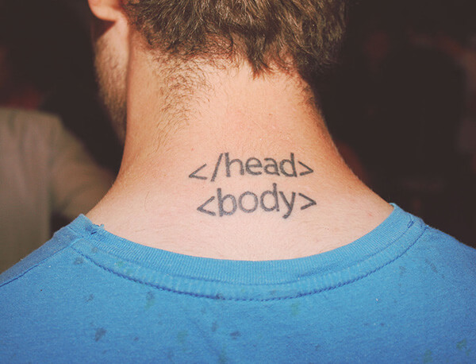

Представьте, что вы попытались ограбить банк. Но, увы, вас и вашего подельника поймали и рассадили по разным камерам. Следователь предлагает сделку: вы даете показания против своего напарника и тогда получаете шанс на освобождение за помощь следствию. У вас есть четыре варианта действий.
Формула воды H20 но это не отменяет площади м2
Правила Двум игрокам предлагается разделить между собой некоторую сумму денег, допустим 1000 рублей. Первый из них, подающий, предлагает свой вариант дележа, например каждому
Второй игрок, принимающий, может либо согласиться на предложенные условия и получить свою долю, либо отвергнуть схему раздела. Во втором случае никто денег не получает — они уходят обратно в банк.
Правила Жители деревни владеют общим пастбищем. Если каждый будет пасти на нем одну корову, то ничего страшного, травы хватит. Если кто-то захочет завести вторую, то вроде бы тоже все нормально: поле-то большое. Но если каждый станет выпасать по две коровы, то травы на поле не хватит, пастбище истощится, начнется голод.
| 1 | 2 |
| 3 | 4 |